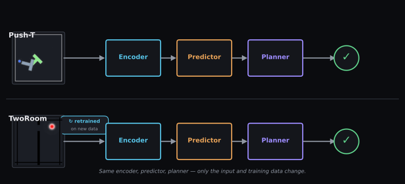

The same model, a second task.
Before any numbers, watch one episode: the agent finding its way through the gap is the whole task.
One recipe, two tasks
The three boxes below are identical to the Push-T pages — only what flows into them changed.

It works — but this is preliminary
Two bars, both near 90% — but notice the TwoRoom band is much fatter; that fatness is the caveat.

Honestly: the second task was evaluated independently (not transfer), on n=3 runs, and is preliminary — the paper gives no number for TwoRoom, so there is nothing to compare against.
Here is what those runs are made of: two clean traversals and the kind of failure the ~11% is.
The numbers behind this
Across 3 runs × 50 episodes, success across all episodes is 134/150 = 89.33% (95% range 83.38–93.33); per-run rates were 90.0%, 94.0%, 84.0%. For context, Push-T reaches 84.35% across 23 runs × 50 episodes — but the run budgets differ sharply (3 vs 23), so the TwoRoom range is intrinsically much wider. Two further caveats: we did not run a random-action baseline on TwoRoom, so we cannot state how far above chance 89% sits for this environment; and two tasks — both 2-D, both with the same image input — are not evidence of general-purpose capability. The model was retrained from scratch on the TwoRoom data, so this is not a transfer or zero-shot result. Dataset: quentinll/lewm-tworooms.